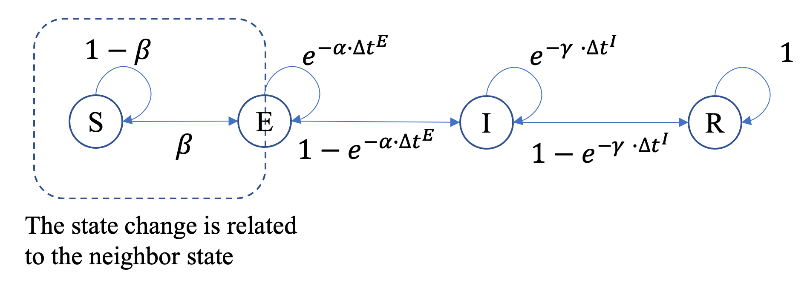

缩写( C)
SEIR ct模型假设感染只通过相邻节点之间的连接在图:math:`G=(V,E)'中传播. 每个节点分为四个州之一: " S " (可接受)、 " E " (暴露/孵化)、 " I " (感染)、 " R " (恢复)。 与离散步骤SEIR相比,**SEIR ct基于自上次进入国家以来的时间,使用过时-依赖的过渡概率**:`Eto I ' 和:Math:`Ito R ' 。
状态
在模拟期间,一个节点可以处于以下状态之一: 1.
状态 |
代码 |
|---|---|
可疑 |
0 个 |
感染 |
页:1 |
已曝光 |
2个 |
已恢复 |
3个 |
参数
名称 |
数值类型 |
默认 |
强制性 |
说明 |
|---|---|---|---|---|
数据 |
数据 |
对 |
图表数据。 |
|
种子 |
列表[int]/浮动在(0, 1)中 |
对 |
种子节点ID或比例(0,1). |
|
贝塔 |
在 [0, 1] 中浮动 |
对 |
每一次接触的感染概率(S-E)。 |
|
α |
在 [0, 1] 中浮动 |
对 |
孵化速率参数(控制E−I危险). |
|
伽马 |
在 [0, 1] 中浮动 |
对 |
回收率参数(控制I R危险)。 |
|
设备 |
“ cpu” / int( CUDA 指数) |
"cpu" (英语). |
没有 |
运行模型的设备 。 |
使用量 重量 |
布尔 |
虚假 |
没有 |
是否使用边重 。 |
兰德种子 |
输入 |
无 |
没有 |
生成初始种子集的随机种子 。 |
执行情况
我们使用三个布尔指标向量:`h, e, rin \0, 1} ^N 和两组增压器,存储**输入时间**:
:math:`(h i,e i,r i)=(1,0)'表示“感染者”,math:`(h i,e i,r i)=(1,1,0)'表示“接触者”。
:math:`(h i,e i,r i)=(0,0,1)'表示"恢复","(h i,e i,r i)=(0,0)"表示"可接受".
: math: 't i^{E}` 记录迭代 : math: 'k' 当节点: 'i' ** E**.
\(t i^{i}`i}\) records records records records records it it it it it it it it it it it it it it it it it }` it it it }` }` }` }` it }` }` }` }` }` }` }` entered entered }` entered entered entered entered entered }` entered entered entered entered entered entered entered entered entered }` }` entered entered entered entered entered }` entered entered }` }` entered entered entered entered entered entered entered entered }` }` }` }` }` }` }` }` }` }` }` }` }` }` }` }` }` }` }` }` }` }` }` }` }` }` }` }` }` }` }` }` }` }` }` }` }` }` }` }` }` }`
使用 : math: 'k' 解析当前迭代,定义持续时间变量 : math: QQDelta t i^{E} = k - t i^{E}`和: math: QXDelta t i^{I} = k - t i^{I}`. 系统分三个阶段更新:
{kind=link}

整数计数器和指标变量以独立的统一随机变量更新 : math : 'U i^{mathrm{exp}}, U i^{mathrm{inf}}, U i^{mathrm{rec}}simmathrm{Uniform}(0,1)'